Bespoke Walk-In & Built-In Wardrobes
Every garment collection possesses distinct storage ergonomics. We engineer floor-to-ceiling wardrobes tailored around your exact lifestyle—integrating climate-breathable cedar drawer linings, concealed LED lighting channels, smoked tempered glass fronts, and motorized pull-down clothes lifters.
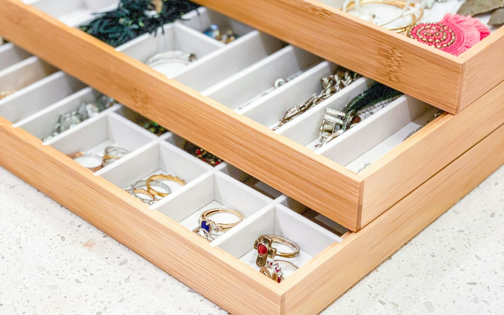
Bespoke Jewelry Trays
Velvet-lined dovetail organizer drawers with digital lock security.
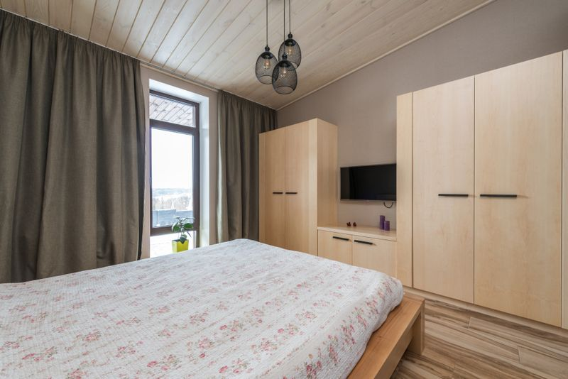
Recessed Sensor LEDs
3000K warm diffused light integrated directly into timber shelf profiles.
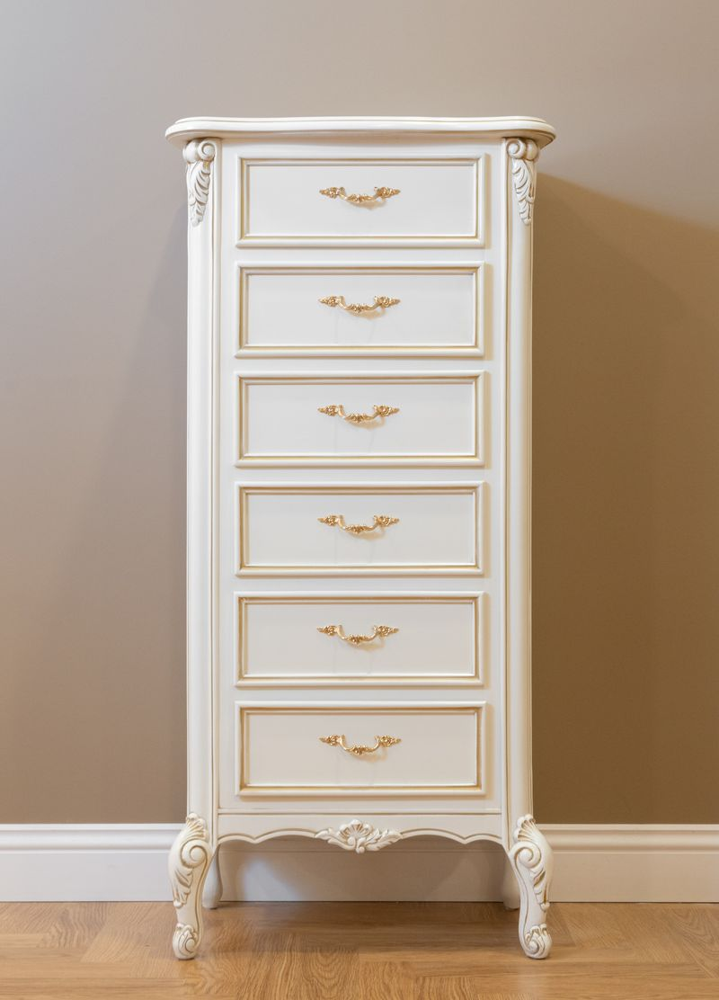
Blumotion Soft-Close
Whisper-quiet pneumatic sliding tracks rated for 100,000 duty cycles.
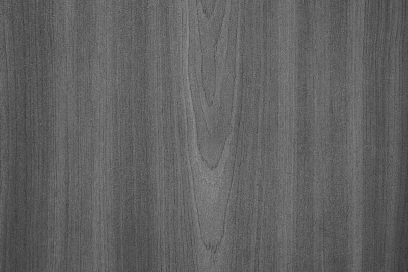
Zero Moisture Warp
BWP 710 calibrated marine ply cores with natural bookmatched veneers.


American Walnut, Natural Oak, Fluted Smoked Glass, Matte PU Lacquer.

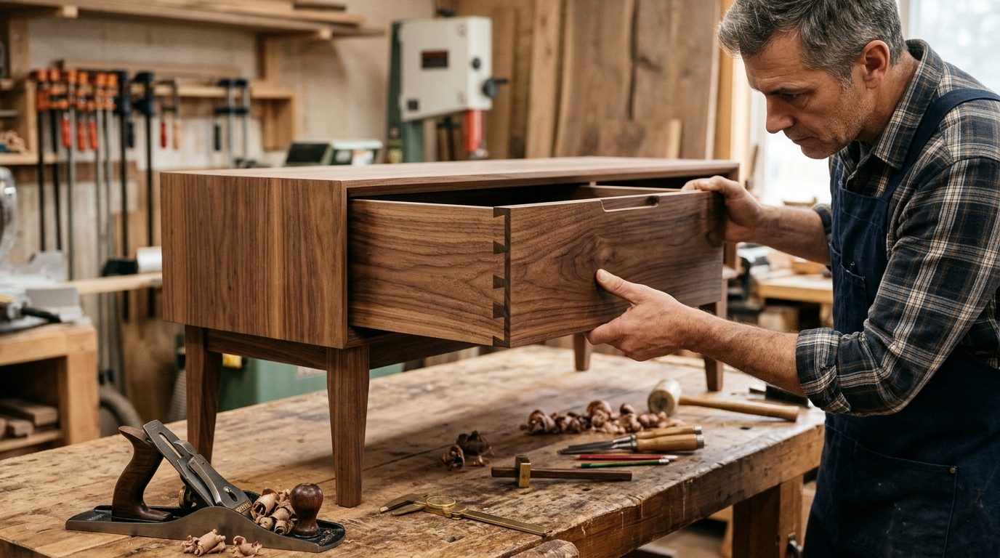
Slat spacing calibrated with acoustic felt to eliminate living room echo.
Floating TV Units & Media Feature Walls
Tired of tangled cable clusters and bulky retail entertainment cabinets? Our suspended media consoles float weightlessly on heavy-gauge French cleat steel brackets, combining concealed cable raceways, IR-remote transparent slatted doors, and marble or porcelain hearth inserts.
Grand Pivot Doors & Flush Acoustic Doors
A home’s entry door is its architectural handshake. We build monumental pivot entrance doors up to 10 feet in height that glide silently on concealed German hydraulic floor pivots. For interior bedrooms and studies, our flush timber doors sit completely planar to drywall with invisible magnetic strikes.
Multi-layer acoustic core eliminates ambient noise transfer.
Single seamless timber slab with concealed tension stabilizer rods.


Simonswerk 3D adjustable hinges, knurled brass pull bars, smart biometric mortise.

Acoustic Slat Walls & Coffered Timber Ceilings
Enhance room warmth and sound intimacy. Our fluted battens are precision-milled from solid white oak and walnut, mounted over recycled PET acoustic felts to eliminate reverberation. We also integrate hidden jib doors that blend flush with the slat pattern.
Custom batten depths (12mm, 18mm, 25mm profiles)
Invisible flush secret door integrations
Shadow-reveal LED channels along top & bottom perimeters
Bespoke Kitchen Millwork & Islands
No particle board. No swollen sink bottom bases. We build kitchen carcasses exclusively out of 100% boiling-waterproof marine birch plywood, faced with quarter-sawn solid hardwood doors, dovetailed solid maple drawer boxes, and custom spice & knife organizers.
Phenolic marine ply cores impervious to sink spills.
Blum Legrabox drawers with 70kg dynamic load ratings.
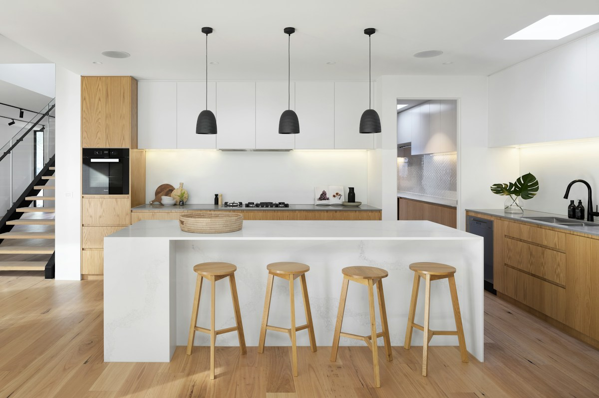

650kg Point Load Capacity, Heavy-Gauge Concealed Steel Stringers.
Quartered White Oak, American Walnut, Ebonized Ash, Plantation Teak.
Architectural Hardwood Staircases & Floating Treads
A staircase should be a sculptural centerpiece. We engineer floating cantilever treads machined from 60mm solid single-plank hardwoods, anchored directly into concealed internal structural steel stringers. Completed with frameless glass balustrades, integrated under-tread LED channels, and acoustic dampeners.
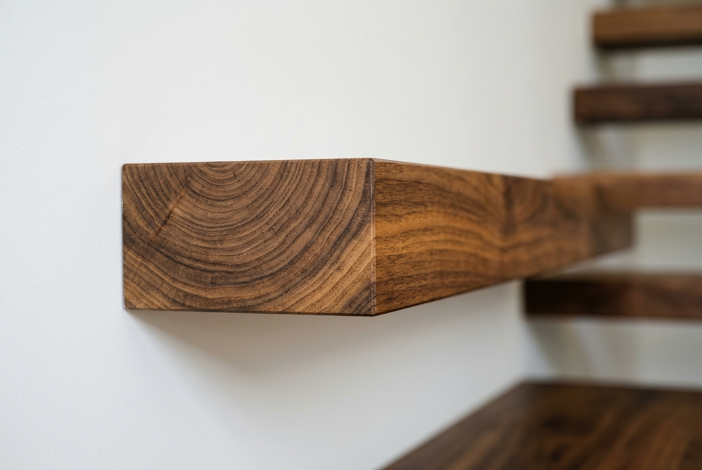
60mm Solid Hardwood
Single-plank sequence-matched American Walnut or Quarter-Sawn White Oak.
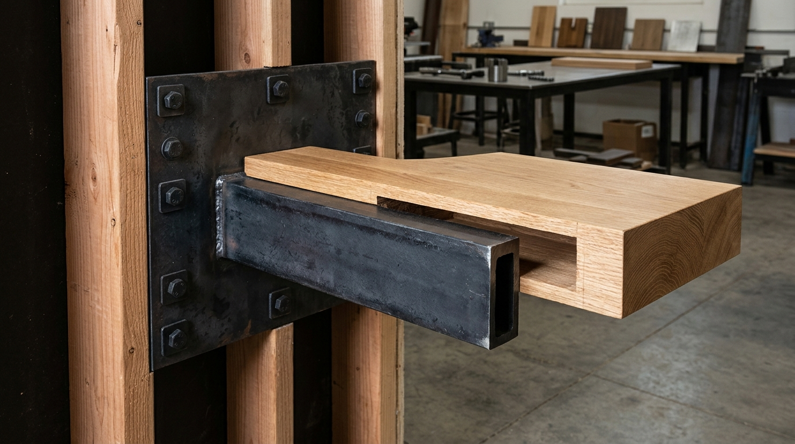
Concealed Steel Core
Drywall-embedded chassis engineered to eliminate bounce and deflection.
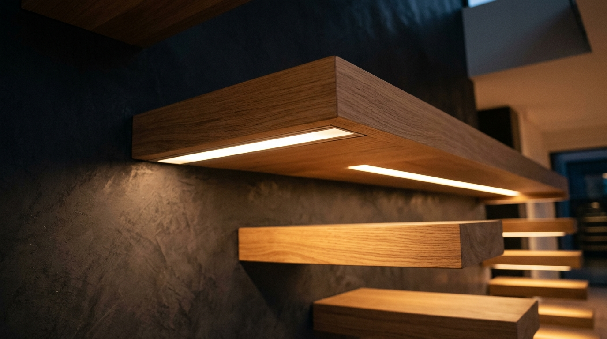
Diffused Step LEDs
Concealed micro-extrusion lighting with zero visible wiring or glare.
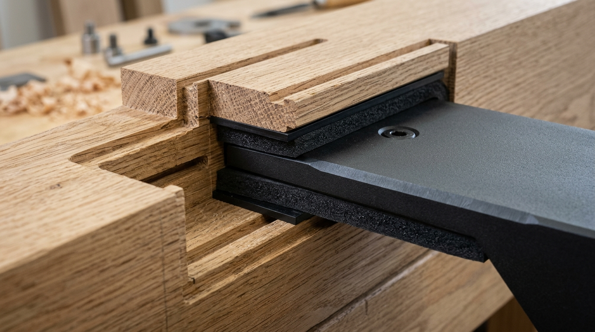
Zero-Squeak Isolation
Neoprene and magnetic decoupling pads prevent footstep squeaks.
Custom Wine Cellars & Sommelier Vitrines
Fine vintages require exacting climatic conditions. We design and build hermetically sealed wine sanctuaries, walk-in tasting rooms, and architectural glass vitrines. Utilizing naturally mold-impervious California All-Heart Redwood, Spanish Cedar, and ebonized ash with dual-zone climate integration.
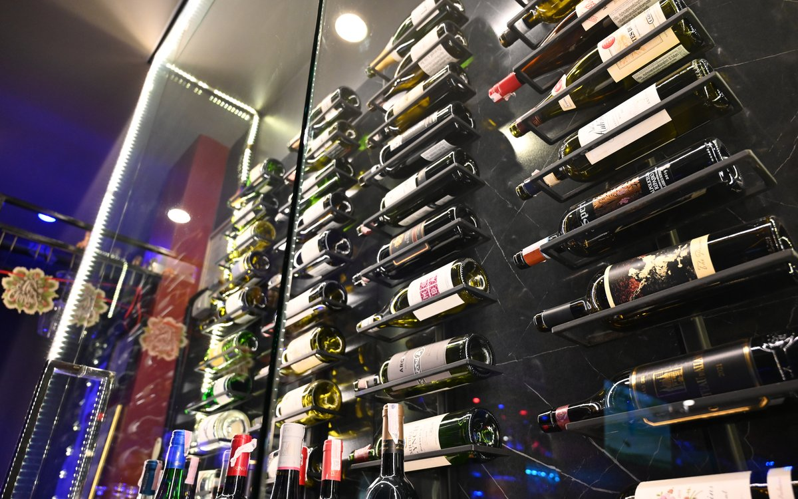
All-Heart Redwood Racks
Naturally resistant to rot, mildew, and cellar moisture without chemical sealants.
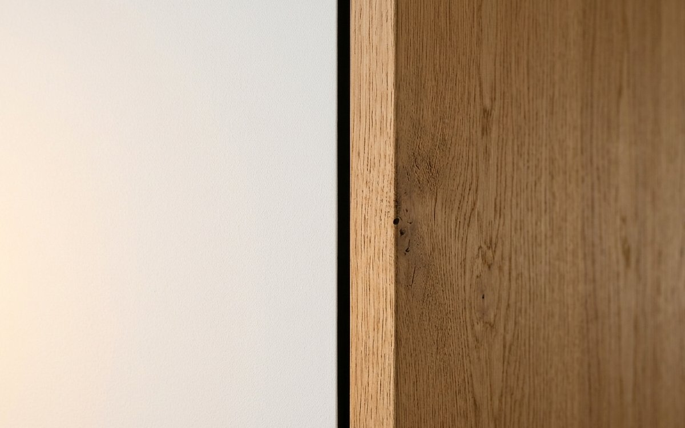
Vapor-Barrier Joinery
Engineered thermal jambs maintain stable 55°F temperature & 70% humidity.
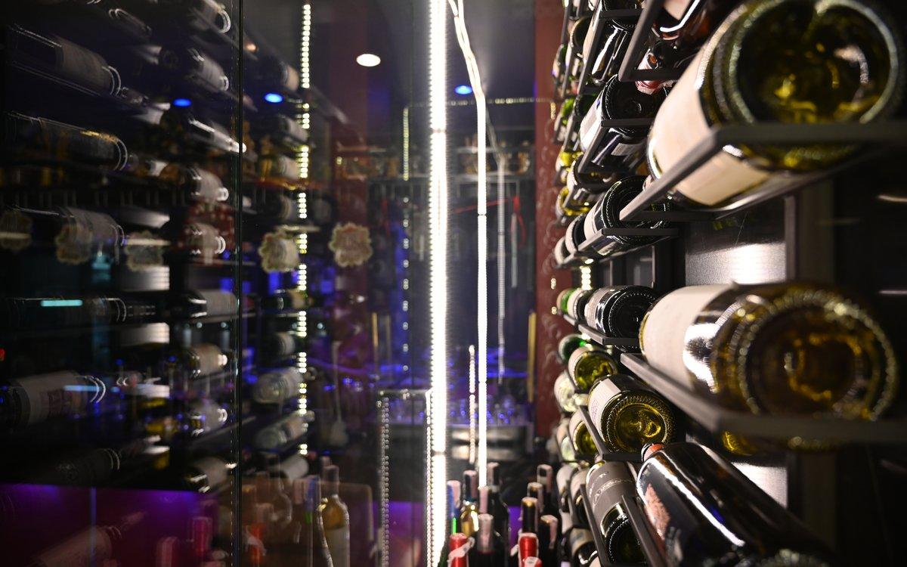
Low-E Argon Glass Walls
Triple-pane UV filtering glass vitrines with acoustic drop-down perimeter gaskets.
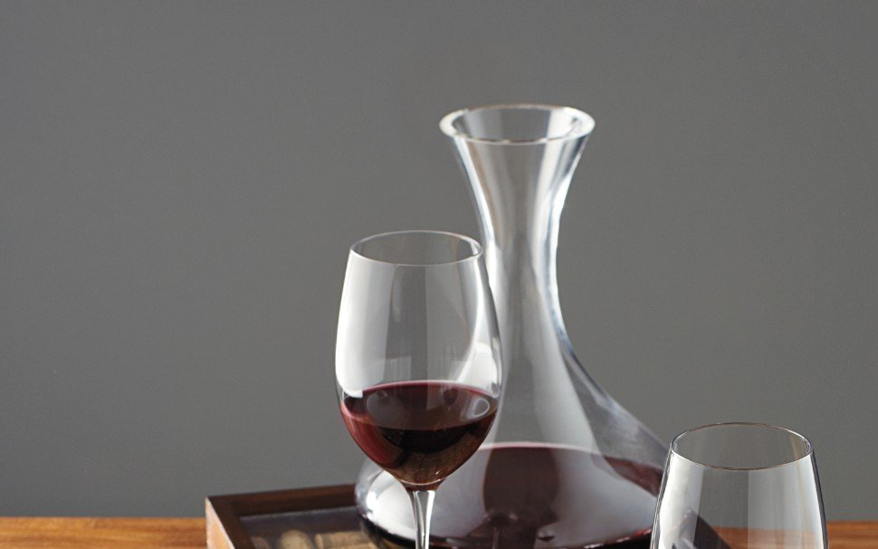
Sommelier Tasting Island
Integrated stemware hanging racks, decanting marble ledges, and tasting drawers.

From 200-Bottle Glass Vitrines to 4,000-Bottle Private Estate Cellars.
Natural Untreated Redwood, Fumed Oak, Smoked Fluted Glass, Brass Inlays.
Joinery Services & Installation FAQs
Technical questions answered regarding pivot door tolerances, floating cantilever staircase engineering, acoustic paneling, and kitchen joinery.
Floating cantilever treads require an embedded structural steel stringer chassis anchored directly into reinforced concrete, blockwork, or double structural steel-flitched stud walls prior to drywall closure. Each 60mm solid hardwood tread sleeves over a high-tensile steel blade, supporting point loads up to 650kg with zero detectable bounce or deflection.
To prevent tall door leaves from bowing with seasonal climate shifts, we embed dual concealed aircraft-grade steel tension stabilizer rods inside the door core. These rods allow micrometer tension calibration over the lifetime of the door, ensuring seamless planar alignment with drywall jambs and effortless movement on German hydraulic floor pivot bearings.
Yes. Our fluted slatted walls are precision CNC-indexed so that secret jib doors, electrical panels, and HVAC airflow channels share the exact batten repeat and shadow reveal. Hidden push-latches and concealed 3D adjustable SOSS hinges make access doors virtually invisible when closed.
Particleboard and MDF swell permanently when exposed to water leaks around sinks and dishwashers. Phenolic marine birch plywood is 100% boiling-waterproof, structurally holds screws 4x tighter than composite board, and will never delaminate or harbor mildew, providing an indestructible foundation for luxury kitchen cabinetry.
We craft sommelier racks from naturally mold-impervious California All-Heart Redwood and aromatic Spanish Cedar. Enclosures feature closed-cell vapor barriers, thermal break framing, and argon-filled double glazing connected to split-system climate units that hold a steady 55°F temperature and 65% relative humidity.
Ready to Explore In-Depth Specifications or Commission Your Space?
Review millimeter-accurate CAD joinery tolerances, German hardware options, and timber specimens across all 7 disciplines—or book our Master Joiner for a precision 3D laser site survey.